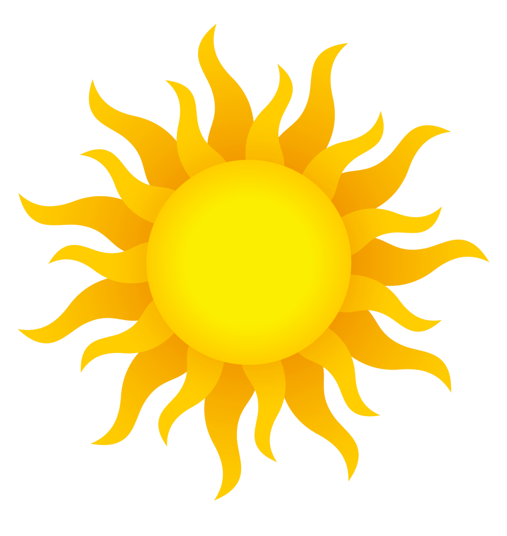
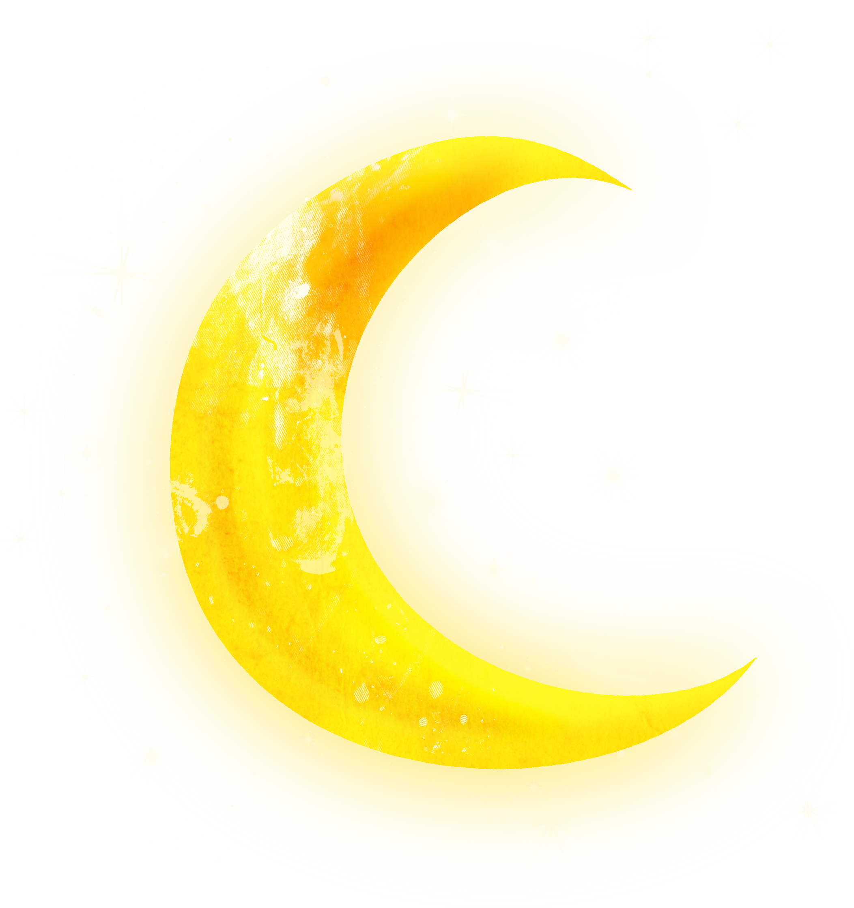
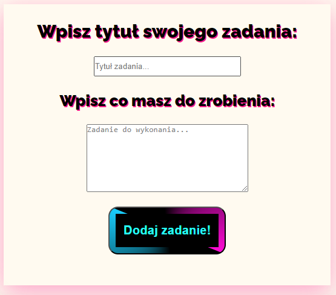

 Główna
Główna
 O mnie
O mnie
Projekty
 Kontakt
Kontakt
Witaj na mojej stronie, znajdziesz tutaj informacje o mnie,
moje projekty oraz kontakt do mnie 😀
Na górze ekranu możesz zmienić motyw strony zgodnie z własnymi
preferencjami na ciemny lub jasny, jest tam również opcja zmiany języka
z polskiego na angielski i na odwrót 🏴
Na tej stronie znajdziesz 4 zakładki, obecnie znajdujesz się
na jednej z nich, czyli na "Głównej Stronie", są tutaj ogólne informacje
i wstęp do strony 🙃
W zakładce "O mnie" znajdziesz informacje odnośnie mojej
osoby, takie jak biografia w odnośniku, krótkie przedstawienie i umiejętności,
które nabyłem lub niedawno poznałem, w końcu dopiero się uczę 😏
Trzecia zakładka to "Projekty", znajdują się tam wykonane przeze mnie
podstawowe strony czy pracę, dzięki którym szkoliłem się i rozwijałem, z czasem postaram
się zwiększyć poziom zaawansowania nowych stron, aczkolwiek pierwsze podejścia mogą być dość proste 😴
Ostatnia zakładka, która ci się przyda, jeśli zainteresuje Cię moja praca
to "Kontakt", raczej nie trzeba tłumaczyć - znajdziesz tam dostępne portale społecznościowe,
sposoby kontaktu ze mną przez np. telefon czy email
Biografia
Urodziłem się w 2003 roku, mieszkam w malutkiej wsi, która ma jeden kościół i obecnie tylko jeden sklep. Chodziłem do szkoły w miasteczku parę kilometrów dalej, przez co zawsze dojeżdżałem autobusem, a w dodatku, będąc w pierwszych klasach, musiałem czekać na starszą siostrę, abym nie wracał sam przez wieś i sporą część czasu spędzałem w szkole. Komputer, który miałem w domu był komunijnym prezentem dla siostry, grałem na nim w wiele gier internetowych, aż pobrałem słynnego Minecrafta i tam spędziłem wiele długich lat, później przerzucając się jeszcze na strzelanki. Na początku edukacji nie byłem zbyt chętny do nauki, a oceny były raczej średnie. Z czasem jednak, gdy robiło się trudniej, o dziwo zaczęły pojawiać się lepsze oceny, a w ostatniej klasie podstawówki zdobyłem nawet świadectwo z wyróżnieniem, za które rodzice zainwestowali w komputer dla mnie i mogłem przerzucić się na nowsze gry typu CS:GO. W gimnazjum zdobyłem więcej znajomych, ale i musiałem już się trochę przyłożyć. Mało razy wychodziłem na spotkania ze znajomymi, przez co jedynym zajęciem był komputer: muzyka, gry, oglądanie filmów, a także granie z ludźmi z internetu. Dużo pomagałem rodzicom, wykonywałem wiele prac w domu, miałem swoje obowiązki i często bawiłem się z naszymi zwierzętami domowymi. Razem ze skończeniem gimnazjum i pozytywnymi wynikami z egzaminu gimnazjalnego. Odłączyłem się od reszty, idąc do technikum w innym mieście z jedynie jedną znajomą mi osobą. Zacząłem tam kształcić się w kierunku programistyki i uczyłem się wielu rzeczy od stron internetowych aż po aplikacje okienkowe czy mobilne. Zdałem prawo jazdy za drugim razem, przez wakacje pracowałem w firmie, dorabiająć na własne wydatki, jak na przyklad zakupiony samochód rok później. Zdałem egzaminy zawodowe INF.03 i INF.04, zacząłem również samemu douczać się w domu, przy komputerze, aby przygotować się do możliwej przyszłej pracy. W ostatnim roku przed maturą stwierdziłem, że biorę się za strony internetowe i w taki sposób powstało to, co właśnie widzisz...
Zainteresowania
|
|
 |
 |
 |
| Interesują mnie filmy czy seriale o różnej tematyce |
Uwielbiam grać w gry, szczególnie gatunku akcji oraz survival |
Lubię również spacerować, niezależnie od pogody czy temperatury |
Od dziecka mam kontakt ze zwierzętami domowymi, z którymi często się bawię |
W wolnym czasie lubię słuchać muzyki, zazwyczaj wszystkiego, co wpadnie mi w ucho |
Wróć do poprzedniej strony
Strona z tworzeniem zadań

Na tej stronie zbudowanej od zera znajdziesz zwykłą listę zadań do zrobienia, która oczywiście zapisuje dane dla użytkownika, po powróceniu znajdziesz tam te same zadania.
Strona pocztowa z quizami

Możesz tutaj wysyłać podstawowe wiadomości pocztą oraz rozwiązywać quizy.
Tu wkrótce powstaną nowe projekty 😅

Możesz wysłać mi zaproszenie do znajomych na Facebooku, najlepiej jeśli
napiszesz wiadomość, abym wiedział czy to nie przypadkowa osoba,
na pewno szybko odpowiem.
Kliknij aby przenieść się do mojego profilu

Możesz też wysłać mi wiadomość na pocztę Gmail,
zaglądam tam raczej rzadko, ale jestem pewien,
że prędzej czy później odczytam twoją wiadomość.
Kliknij aby zobaczyć

Możesz również wysłać mi SMSa pod ten numer, zadzwonienie do mnie
nie zawsze za skutkuje - w końcu mnóstwo połączeń to reklamy,
z którymi nikt nie chce mieć do czynienia lub zwyczajnie nie mam
możliwości odebrać. Wiadomość SMS z pewnością szybko odczytam i na nią odpowiem.
Kliknij aby zobaczyć